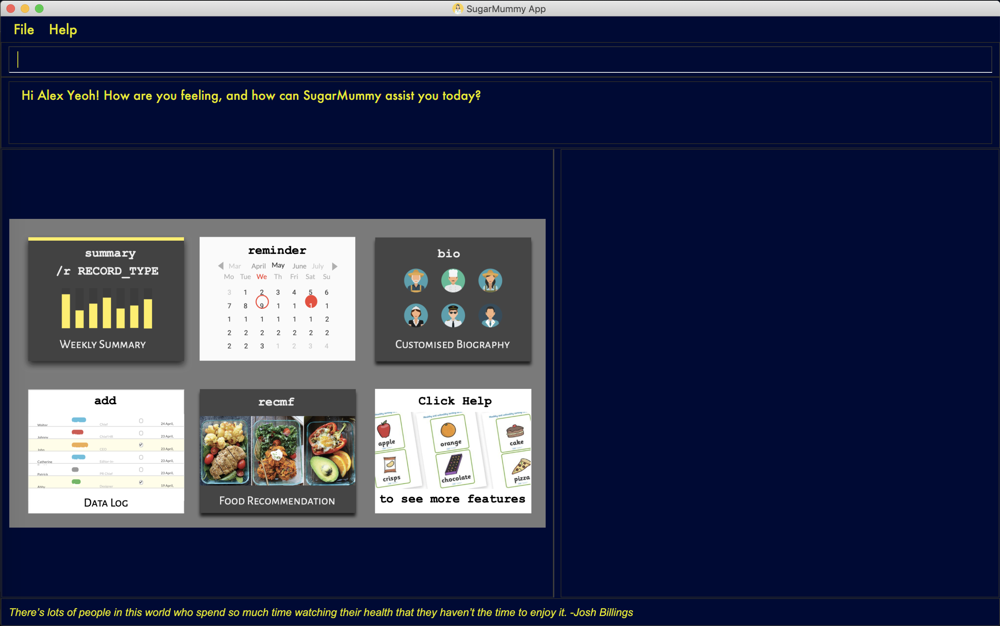
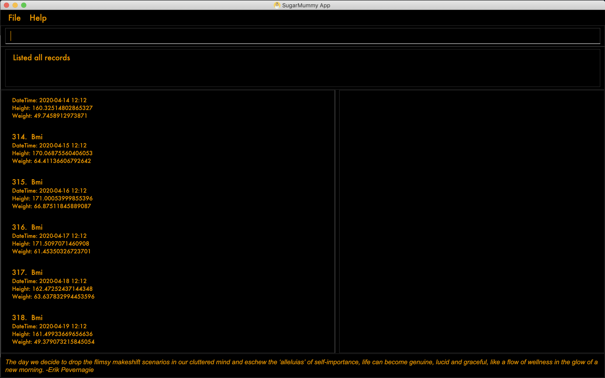
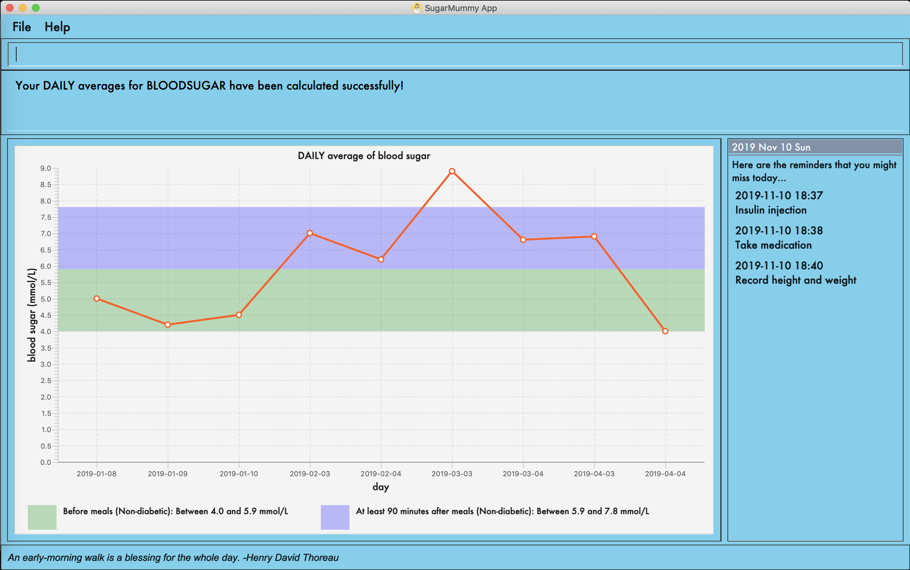
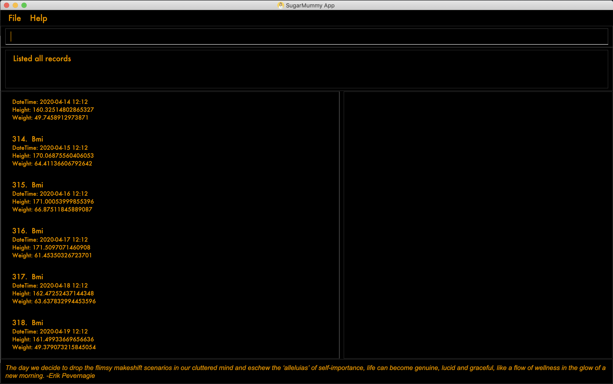
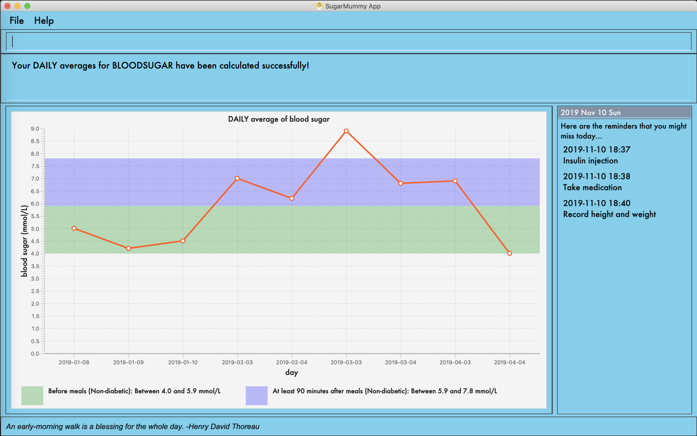
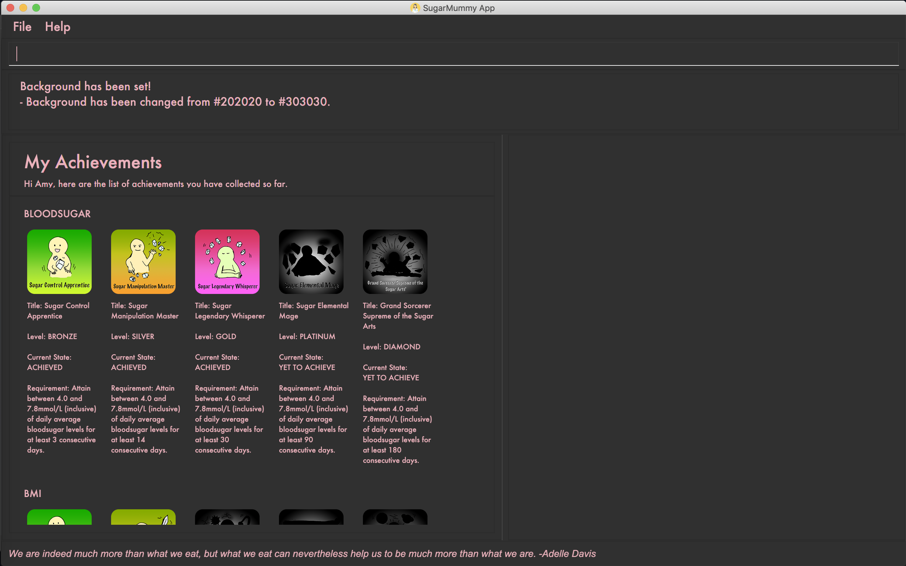
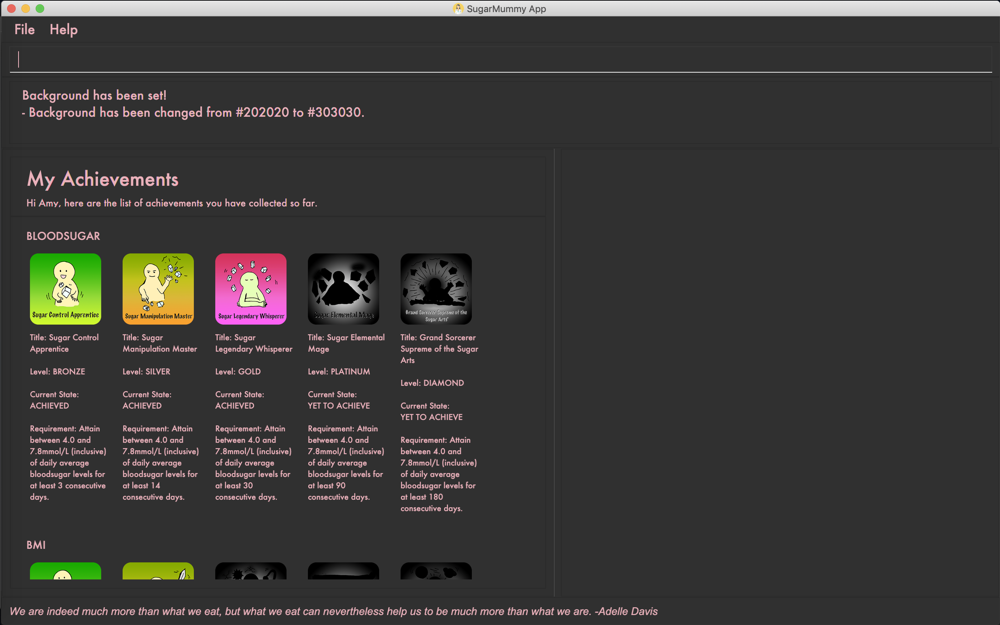

By: Team CS2103-T16-1 Since: Sep 2019 Licence: MIT
- 1. Introduction
- 2. Quick Start
- 3. Features
- 3.1. DATA LOG
- 3.2. CALENDAR AND REMINDER
- 3.2.1. Add a reminder:
reminder - 3.2.2. Add an event:
event - 3.2.3. View calendar entries:
calendar - 3.2.4. Snooze reminder:
snooze[coming in v2.0] - 3.2.5. Complete a task:
complete[coming in v2.0] - 3.2.6. Set time zone:
timezone[coming in v2.0] - 3.2.7. Search for entries in calendar:
search[coming in v2.0] - 3.2.8. Delete an entry in calendar
[coming in v2.0]
- 3.2.1. Add a reminder:
- 3.3. PERSONALISED USER EXPERIENCE
- 3.3.1. Show a list of all achievements the user has attained:
achvm - 3.3.2. Shows a page displaying the user profile of the user:
bio - 3.3.3. Adds a biography for the user using specified fields:
addbio - 3.3.4. Edits a biography for the user using specified fields:
editbio - 3.3.5. Clears the biography of the user using:
clrbio - 3.3.6. Sets the font color of the text:
fontcolor - 3.3.7. Sets the background picture using a specified file path:
bg - 3.3.8. Displays a motivational quote:
[no action required]
- 3.3.1. Show a list of all achievements the user has attained:
- 3.4. DATA ANALYSIS
- 3.5. Food Recommendation
- 3.6. Other Common Features
- 4. Features Coming in v2.0
- 5. Command Summary
- 6. FAQ
1. Introduction
Do you feel it difficult to keep the right diets for type II diabetes? Do you want to manage your hectic schedule? Do you want to have a better overview of your health data? Do you want to move to a healthier lifestyle? If your answer is yes, then SugarMummy is perfect for you! SugarMummy is a lifestyle tracker and planner that aims to combat Type II diabetes by encouraging users to keep a healthy lifestyle. Moreover, being a computer app with Command Line Interface, SugarMummy is optimized for fast typers who has access to a computer most of the time.
Hope following features will benefit you and enjoy!
-
Data tracker for various data types (blood sugar levels and bmi)
-
Easy-to-use reminder and calendar
-
Personalized user experience (achievements, biography, and motivational quotes)
-
Daily, Weekly and Monthly graph summary for your activities and health level
-
Customized recommendations for healthy dieting
 
 

2. Quick Start
-
Download the latest
sugarmummy.jarhere. -
Copy the file to the folder you want to use as the home folder for data records.
-
Double-click the file to start the app. The GUI should appear in a few seconds.
-
Type the command in the command box and press Enter to execute it.
e.g. typinghelpand pressing Enter will open the help window. -
Some example commands you can try:
-
addr/bloodsugar v/10 t/now: adds abloodsugarrecord to the app. -
delete3: deletes the 3rd record shown in the current list -
exit: exits the app
-
-
Refer to Section 3, “Features” for details of each command.
3. Features
Command Format
-
Words in
UPPER_CASEare the parameters to be supplied by the user e.g. inreminder d/DESCRIPTION,DESCRIPTIONis a parameter which can be used asreminder d/medicine. -
Items in square brackets are optional e.g
d/DESCRIPTION [r/REPETITION]can be used asd/medicine r/dailyor asd/medicine. -
Items with
… after them can be used multiple times including zero times e.g.[t/TAG]…can be used ast/friend,t/friend t/familyetc. -
Parameters can be in any order e.g. if the command specifies
d/description dt/2020-01-20 12:00,dt/2020-01-20 12:00 d/descriptionis also acceptable.
3.1. DATA LOG
3.1.1. Add a data entry to the diabetes tracker app: add
Format: add rt/RECORD_TYPE v/VALUE t/TIME [t/TIME_END]
DateTime must be the last field.
3.1.2. Show a list of all data entries in the diabetes tracker app: list
Format: list [r/RECORD_TYPE] …
If a specific RECORD_TYPE is provided, it will list the data entries that are of RECORD_TYPE. If more than 1 RECORD_TYPE is provided, it will list all data entries of the requested types. Otherwise, it lists all types of recent data entries.
3.1.3. Edit an existing entry in the diabetes tracker app: edit
Format: edit INDEX [v/VALUE] [t/TIME] [t/TIME_END]
Edits the entry at the specified INDEX. The index refers to the index number shown in the displayed entries list. The index must be a positive integer. At least one of the optional fields must be provided. Existing values will be updated to the input values.
3.1.4. Deletes a specified data entry from the diabetes tracker app: delete
Format: delete INDEX
Index must be a positive integer
The index refers to the index number shown in the displayed entries list
3.2. CALENDAR AND REMINDER
3.2.1. Add a reminder: reminder
Format: reminder d/DESCRIPTION dt/DATETIME [r/REPETITION]
Add a reminder at a specific time starting from a date. There is no repetition by default, user can specify a daily or weekly or no repetition optionally.
3.2.2. Add an event: event
Format: event d/DESCRIPTION dt/DATETIME [dt/DATETIME] [td/TIME_DURATION]
Add an event with starting time and optional ending time. Optionally set a reminder some time before the event.
3.2.3. View calendar entries: calendar
Format: calendar [ym/YEAR_MONTH] [ymw/YEAR_MONTH_DAY] [ymd/YEAR_MONTH_DAY]
View calendar entries in a month or in a week or on a day.
ymw accepts a date also but it will include all days in the same week as the given date and week starts from Monday.
(If more than one of the arguments are present, then it accepts the one with the smallest time unit. e.g. if ymw and ymd are
both typed in, then it only shows entries on the given date if the date is valid.)
3.2.4. Snooze reminder: snooze [coming in v2.0]
Format: snooze [tp/TIME_PERIOD]
Silence the current reminder and activate it after a time period.
3.2.5. Complete a task: complete [coming in v2.0]
Format: complete [INDEX]… [t/TIME]
Mark all the reminders before now as completed if no argument provided. Otherwise, mark only those tasks with indices provided or before the specific time as completed.
3.2.6. Set time zone: timezone [coming in v2.0]
Format: timezone tz/TIME_ZONE [t/TIME] [t/TIME_END]
Set the time zone of the application permanently or in any time interval(e.g. For travelling).
3.2.7. Search for entries in calendar: search [coming in v2.0]
Format: search [KEYWORD] [t/TIME] [t/END_TIME] [tp/TYPE] [v/VENUE] [p/PEOPLE]
Search for all entries by providing keyword, time interval, type, venue or people.
3.2.8. Delete an entry in calendar [coming in v2.0]
Delete an event that you do not want to keep track anymore.
3.3. PERSONALISED USER EXPERIENCE
3.3.1. Show a list of all achievements the user has attained: achvm
Format: achvm
Displays the current list of achievements attained by the user, categorised by record type.
Each achievement has a picture that represents it, a title, level, state and requirement required to attain
the achievement. All these information are available upon the entering of the achvm command. However, the user
would only be able to see, for each achievement, the corresponding picture that represents the current state of the
achievement (eg. if a user has yet to achieve the achievement, he / she will only see a silhouette image of the
character in the picture rather than the actual image. Achieving the achievement will allow the user to "unlock" its
coloured image).
For each record type, there are five levels of achievements available:
-
Bronze (3 consecutive days of meeting requirements)
-
Silver (14 consecutive days of meeting requirements)
-
Gold (30 consecutive days of meeting requirements)
-
Platinum (90 consecutive days of meeting requirements)
-
Diamond (180 consecutive days of meeting requirements)
For each achievement, there are 3 possible states:
-
Achieved (coloured picture) - met requirements for the most recent number of required consecutive days)
-
Previously Achieved (grayscaled picture) - met requirements before in the records but more recent records no longer meet the number of consecutive days required. i.e. broke streak)
-
Yet to Achieve (silhouette picture) - No part of hte the records meet the consecutive days of requirement.
(All images representing the different achievements and their respective states are hand-drawn and digitally coloured.)
Daily averages for the user’s current records are used to determine whether the requirements to attain the achievement
has been met. Upon adding or deleting a record, the user is notified if there happens to be any new achievements
attained and / or lost. The user can then key in the achvm command to check the new achievements if any. Note that
the achvm command, however, can be keyed in any time; current achievements are always displayed dynamically regardless
at any point of time.
The daily average requirement for each currently known record type are as follows:
-
Blood Sugar: 4.0 to 7.8 mmol/L
-
BMI: 18.5 to 25
A new user and / or user without any records have no achievements by default (i.e. all achievements will be in a state Yet To Achieve, represented by silhouette pictures).
Suppose a user has no records and adds the following records.
-
add rt/BLOODSUGAR dt/2019-02-07 12:12 con/4.5 -
add rt/BLOODSUGAR dt/2019-02-08 12:12 con/4.5 -
add rt/BLOODSUGAR dt/2019-02-09 12:12 con/4.5
Average daily bloodusgar levels are clearly within the required range of 4.0 and 7.8 mmol/L (inclusive). After keying in the third record, the user not only sees that message indicating successful addition of the record, but also an additional message indicating that (a) new achievement(s) have been attained, and suggesting to check achievements. The achievements pane of the user will now indicate attainment of a bronze achievement for bloodsugar (Now a coloured image from what was previously a silhouette image and current state of ACHIEVED).
-
If the user at this point decides to delete the third bloodsugar record, a notification will indicate that achievements are lost, and on the achievements pane the user will lose the achievement (back to silhouette image and YET TO ACHIEVE state)
-
If the user has a new average bloodsugar record the next day and it still fufills the requirement, the user adds to the streak and is on the way towards the next level of attainment for bloodsugar.
-
If the user’s new average record for the next day no longer meets the requirements for bloodsugar levels, the achievement that was originally attained will now have a state of PREVIOUSLY ACHIEVED instead and will be in grayscale colour. A notification is indicated to the user upon the user entering a new record that results in this change.
-
If the user’s subsequent record is not within the next day, the user also loses his / or her streak, and needs to restart his / her count towards the bronze achievement. However, as there is evidence of a three-day streak of meeting the requirements for bloodsugar, the user still attains a PREVIOUSLY ACHIEVED state for the bronze achievement. The user may fill in the missing day of record in order to maintain the streak or restart the count from the new day onwards. (The reason for this is the program cannot award achievements without data that justifies it)
The streak encourages users to keep up good health performances and healthy habits that lead to the results observed. Using the average records as a gauge or disregarding missing days of records would have allowed users to 'cheat' in between, but at the same time, users may just so happen to miss out filling in one day of record (hence implementation of the PREVIOUSLY ACHIEVED feature). Maintaining their records at least once a day encourages users to self-monitor and keep their blood sugar levels and BMI in check, with achievements to keep them going.
To enhance performance, the application internally caches the list of achievements. So long as there is no modification
to the list of achievements, the same pane as before is displayed without retrieving images representing the
achievements each time achvm is called. This means that after the first time a specific achievements page is
displayed, subsequent loading is much faster for the user! :) Of course, this is until the next update of achievements,
or until the application is restarted, though loading itself is already optimised with image resolution sizes that are
just sufficient for the page, and most of the time the user should not notice any significant differences at all whether
the achievements are loaded for the first time. This means that regardless of the device the user is using, the pane is
more or less guaranteed to run smoothly without any notable performance issues with efficiency. Ultimately, in short,
measures have been taken to ensure quality in user experience, especially for a feature that focuses on
personalised user experience :)
The command word, as for all other commands, is not case-sensitive for convenience to user.
3.3.2. Shows a page displaying the user profile of the user: bio
Format: bio
Displays a pane containing user information such as the user’s profile picture, name, NRIC, gender, date of birth, contact number, address and other biography information that the user would like to include.
The pane first includes the user’s name, profile picture and profile description, followed by biography information displayed in a table with the following fields:
-
Name
-
NRIC
-
Gender
-
DOB
-
HP
-
Emergency HP
-
Medical Conditions:
-
Address
-
DP Path
-
Font Colour
-
Background
-
Background Size
-
Background Repeat
-
My Goals
-
Other Bio Info
Note that the bio table here also includes the user’s preferences such as font and background, as we believe these aesthetics information could also represent the user in one way or another. Furthermore, this is the page that the user may refer to for an overview of important information.
All data in the table changes dynamically with change in information.
If a field that allows for more than one value is displayed, the information is presented in the form of a numbered list.
If a field contains no information, the field name would still be displayed but its corresponding data would simply be blank.
Note that to enhance performance, the profile picture only changes when the user specifies a change in the path name. This means that if a user uses "doge.png" as the profile picture, and the source file "doge.png" is replaced with a new image during the running of the application, this change isn’t immediately reflected until "doge.png" in the system is changed to something else such as "doge2.png" and back to "doge.png", or the application is restarted. This ensures that with changes to other fields, the page does not unnecessarily reload the same image and cause lags in user performance. This is especially so when the user has a lot of information to enter and modify. More information on the adding of biography information is described in the following subsection.
If the biography file storing the biography information is corrupted, a new empty biography with a default profile picture is displayed to the user.
This is with the exception of DP PATH. This is because it is much more likely that the display picture file cannot be
found (i.e relocated or renamed in the user’s device) than for other information, that should only have been edited by
the user via the application, to be corrupted. We don’t want a situation such that if the original file is deleted,
replaced or relocated, the user loses all other biography data. As such, if DP PATH can no longer be loaded as an image,
the default profile picture is used instead, and the user is notified that the display picture cannot be found.
If the biography file storing the biography information is deleted or cannot be found, a sample biography with the default profile picture is loaded instead.
This command cannot have any sub-arguments, and thus, if the user enters bio 1, an error message will be displayed,
as the user’s intention may not have been necessarily to show the biography. Trailing spaces are automatically trimmed
and as such pose no issue.
Upon loading, a message is included in the feedback display pane to remind users to keep their biography data safe.
The command word, as for all all other commands, is not case-sensitive for convenience to user.
3.3.3. Adds a biography for the user using specified fields: addbio
Format: addbio n/NAME [dp/DP PATH] [desc/PROFILE DESCRIPTION] [nric/NRIC] [g/GENDER] [dob/DATE OF BIRTH] p/CONTACT NUMBER… e/EMERGENCY CONTACT… m/MEDICAL CONDITION… [a/ADDRESS] [goal/GOAL]… [o/OTHER BIO INFO]
A user may add a biography if there isn’t already an existing one stored in the application. This could occur if the
storage file is corrupted (refer to above sub-section on bio), or if the user decides to clear the biography (refer to
following sub-section on clrbio command). A user may add at most one biography. If a user attempts to add a
biography when one already exists, an error message will be shown for the user to either editbio instead or clrbio
before adding a new one. Support for multiple user biographies is presently not available nor intended, as the
application is meant to be fully experienced solely by a single user for maximised personalised user experience. As the
fields used by addbio and editbio commands are identical and can appear in any order, a user who attempts to edit
fields using the addbio command when a biography already exists, after receiving the error message, can simply amend
editbio to addbio before re-entering the line of command, without having to re-enter all the fields.
It is recommended for users to have a biography as they are most likely from the target audience group of patients with diabetes, and the presence of a biography could be useful in times of emergency or situations where the application could help them to recall important information. If a user has no biography saved, a message is shown in feedback display pane, encouraging them to create one.
A user is allowed to add all the fields using the format above, in any order of fields to add the biography. In adding a biography, it is compulsory for the user to include the following information (i.e. should not be blank):
-
Name
-
Contact Number
-
Emergency Contact
-
Medical Condition
Other information such as NRIC and DATE OF BIRTH are optional, as this depends on how willing the user is to provide
information that is personal to them, and they can furthermore be added any time afterwards using the editbio command.
However, we believe information such as contact number, emergency contact and medical condition should not be ignored,
as they are some of the most necessary in times of emergency, and the user (or even his / her caretaker) should have
knowledge about and access to them at all times.
An error message is shown if a user attempts to add a biography not containing any of these fields. A storage file containing biography information is also deemed to be corrupted if it does not contain any of these fields. An empty biography will be loaded instead. If a user, however, does not have any medical conditions using this application, he or she may input "NIL". However, this is highly not recommended, especially for users who do have medical conditions.
A user can have more than one of the following types of fields:
-
Contact Number
-
Emergency Contact
-
Medical Condition
-
Goals
This means that a user can add multiple emergency contacts, for instance, by having more than one prefix for the
argument in this form: e/91234567 e/98765432.
Other fields can only have one data value associated with it. If two names are attempted to be added, the program
simply takes the latest name received. eg. In the case of n/firstTestName and n/secondTestName, the program will
save the user’s name as "secondTestName".
For the following fields, certain restrictions are put in place:
-
Name: Can contain only alphabets and spaces
-
NRIC: Can contain only alphanumeric characters
-
Gender: Can contain only alphanumeric characters
-
DOB: Can only be in the format DD/MM/YYYY and represent a valid date (valid day depends on month and presence of leap years)
-
Contact Number or Emergency Contact: Can contain only numbers of at least 3 digits in length
-
DP Path: Has to be a valid path pointing to image eg.
dp//Users/bob/Desktop/doge.png. This also works on windows (with double backslash instead of forward slash in the path). The image must be able to load (i.e. not corrupted or a non-image file)
Other fields can take any values. If the restrictions above are violated, an error message will be shown to the user and the command cannot proceed until the user re-enters the command with the corrected values.
Upon successful processing of the command and its arguments, the user’s biography will be updated accordingly and the biography pane will be displayed to the user, regardless of which pane was previously being displayed before (eg. a user may add to the biography while records are being displayed). In the user’s feedback display pane, a message indicating success is shown, along with the fields that are added, sorted in accordance to a standardised order of fields displayed (same ordering that fields are being presented in this document), regardless of the order entered by the user.
As described above in the bio section, all values are refreshed whenever the biography pane is displayed, with the
exception of the profile picture, that is only updated if there has been a change in the name of given path. By default,
the path is an empty string and in the same way, the default picture is loaded only once until there is a change in the
display picture, regardless of changes to other fields in between during a continuous session of the program.
Arguments for this command cannot be empty, and as such the user may not simply enter addbio or enter invalid
arguments (doing so will result in an error message displayed, with messasge usage details). Any invalid arguments that
occur after a prefix will be taken to be part of the prefix. eg. n/exampleName p/1234567 is a valid input while
n/exampleName asdf/1234567 is invalid as asdf/1234567 will simply be taken as part of the name, and of course this no
longer fulfills the restrictions set for names. However, a/exampleAddress asdf/1234567 is perfectly valid and it will be
taken that asdf/1234567 is intended to be part of the address, as there are no restrictions to the characters that
address may take.
Although the command word is not case-sensitive, its arguments are so as to minimise clashing of user’s intentions and
what the program understands eg. a/exampleAddress M/test is understood differently to the program
than a/exampleAddress m/test is. Ultimately, the user has a balance of convenience and flexibility.
Examples of VALID addbio commands, provided that a biography does not yet exist, include:
-
addbio dp//Users/whneo97/Desktop/doge.png desc/hello world n/testName nric/testNric gender/testGender dob/12/12/2019 p/12343567 p/91234567 e/81234567 m/testMedicalCondition a/example address 123 goal/testGoal o/testOtherInfo(Note: this is provided that the image exists at exactly the SAME PATH in the user’s device. Otherwise, it has to be modifed or removed in order for this example to work) -
addbio n/testMinimal p/91234567 e/81234567 m/testMedicalCondition
3.3.4. Edits a biography for the user using specified fields: editbio
Format: editbio [n/NAME] [dp/DP PATH] [desc/PROFILE DESCRIPTION] [nric/NRIC] [g/GENDER] [dob/DATE OF BIRTH] [p/[INDEX/]CONTACT NUMBER]… [e/[INDEX/]EMERGENCY CONTACT]… [m/[INDEX/]MEDICAL CONDITION]… [a/ADDRESS] [goal/[INDEX/]GOAL]… [o/OTHER BIO INFO]
A biography can be edited only if one already exists. An error message will be shown to a user who attempts to use the
editbio command to edit fields before a biography is added. As the fields used by addbio and editbio commands are
identical and can appear in any order, a user who attempts to add a biography that does not yet exist using the editbio
command, after receiving the error message, can simply amend editbio to addbio before re-entering the line of
command, without having to re-enter all the fields. (this is, of course, with the exception that the fields do not
contain the compulsory fields that are required for the addbio command and not the editibio command).
Once a biography exists, the editbio command functions in a very similar way to the addbio command. The fields are
not only identical but have the same restrictions described in the addbio section above.
The only key difference between the editbio command and the addbio command is that the editbio command does not
require any compulsory fields that the addbio command does. Any combination of fields may be edited so long as there
is more than one field and the inputs are valid.
Similar to the addbio command, an error message is shown if a user attempts to edit a biography but does not specify
any fields.
Data of fields may be removed by simply entering blank input for the field eg. editbio a/ resets the address to blank.
This, however, cannot be done for compulsory fields. An error message will be shown if a user attempts to remove
compulsory information using editbio as this will either violate the above restrictions set and / or the condition
that the field should not be blank. The only way to remove compulsory fields is for a user to clear the biography
(see clrbio section below) completely. Otherwise, so long as a biography exists, at least one value must be present
for each compulsory field.
Another key aspect of the editbio feature is that for fields that can take multiple values
(i.e. phone numbers, medical conditions and goals, as described in the addbio section above),
indexes may be specified to edit (a) particular value(s) of the field.
Take for instance the following phone numbers that are displayed in the user’s biography table.
-
91234567
-
98765432
-
81234567
If the user intends to edit the second number in the list, he or she may input editbio p/2/1234567 to change the second
number in the list of phone numbers. Similarly, if he or she wishes to edit the first and third number,
editbio p/1/1234567 p/2/12121212 would be a valid line of command. Similar to other arguments, this can be combined
with other arguments for fields to be edited (whether or not they allow for multiple values).
It should be noted, however, that the indexes provided should be one based (i.e. starts from one) and positive integers
that are not out of bounds of the list. As such, still with reference to this example, editbio p/4/1234567 is equally
INVALID as editbio p/0/1234567, editbio p/-1/1234567 and `editbio p/string/1234567' and an error message will be
shown in each of these cases.
This way of entering commands is exclusive for fields that support multiple values. As such, this format will not be
recognised for arguments of other fields such as name (i.e. editbio n/1/testName is invalid).
However, fields that support multiple values may use EITHER the indexing format or non-indexing format
(i.e. format used by all other fields). When a sub-argument without indexes such as p/1234567 p/98765432, the program
automatically takes it that a replacement is to be made (i.e. values in the original list is replaced by the new values
given). A combination of the two is however not allowed as it is ambiguous and will never likely be the intention of
the user. As such editbio p/1234567 p/1/2345678 p/23423423 will be INVALID and an error message will be given in the
feedback indicating the inconsistency had such a command been entered. A combination of different fields is again possible,
nevertheless, and different command formatting types may be used across different fields, so long as consistency is maintained
in fields of the same type. (i.e. `editbio p/1/1234567 p/2/2345678 m/Diabetes desc/this is a test description g/12345 is
valid)
If all fields set by the user are no different from what already exists in the biography, the user is notified in the
feedback display pane that the same information already exists in the biography and that there is nothing to be updated.
Hence, if the user’s biography contains Bob as the value of the Name field but not the address field, keying in editbio n/Bob will result
in the notification being shown but not editbio n/Bob a/Test Address. The new value in the address field will be
updated in the second case.
Upon successful processing of the command and its arguments, the user’s biography will be updated accordingly and the
biography pane will be displayed to the user, regardless of which pane was previously being displayed before (eg. a user
may add to the biography while records are being displayed). In the user’s feedback display pane, a message indicating
success is shown, along with the fields that are edited, sorted in accordance to a standardised order of fields
displayed (same ordering that fields are being presented in this document), regardless of the order entered by the user.
Only fields that have been changed will be shown as updated in the feedback. Hence, using the same example above,
entering editbio n/Bob a/Test Address for a biography that already has the name Bob will only result in the address
shown as a field that was modified.
As described above in the bio section, all values are refreshed whenever the biography pane is displayed, with the
exception of the profile picture, that is only updated if there has been a change in the name of given path. By default,
the path is an empty string and in the same way, the default picture is loaded only once until there is a change in the
display picture, regardless of changes to other fields in between during a continuous session of the program.
Arguments for this command cannot be empty, and as such the user may not simply enter editbio or enter invalid
arguments (doing so will result in an error message displayed, with message usage details). As described in the addbio section, any invalid arguments that
occur after a prefix will be taken to be part of the prefix. eg. n/exampleName p/1234567 is a valid input while
n/exampleName asdf/1234567 is invalid as asdf/1234567 will simply be taken as part of the name, and of course this no
longer fulfills the restrictions set for names. However, a/exampleAddress asdf/1234567 is perfectly valid and it will be
taken that asdf/1234567 is intended to be part of the address, as there are no restrictions to the characters that
address may take.
Although the command word is not case-sensitive, its arguments are so as to minimise clashing of user’s intentions and
what the program understands eg. a/exampleAddress M/test is understood differently to the program
than a/exampleAddress m/test is. Ultimately, the user has a balance of convenience and flexibility.
Examples of VALID editbio commands, provided that a biography exists, include:
-
editbio desc/hello world n/testName nric/testNric gender/testGender dob/12/12/2019 p/91234567 e/81234567 m/testMedicalCondition a/example address 123 goal/testGoal o/testOtherInfo -
editbio dob/28/12/2019 -
editbio p/1234567 p/23456789 -
editbio p/1/234567 p/2/3456789 -
editbio m/medicalCondition1 m/medicalCondition2 m/medicalCondition3 m/medicalCondition4 -
editbio n/Hello World
3.3.5. Clears the biography of the user using: clrbio
Format: clrbio
A user may clear his or her biography using the clrbio command. If a biography exists, all data from all biography
fields will be removed. If a biography does not exist, the user will be displayed a message that the biography is
already empty and there is no biography information to clear. If a biography is successfully cleared, the
biography display pane with an empty biography table is shown to the user. A user cannot execute editbio after
clearing the biography until another biography has been added using addbio.
Note that this command does not affect the background and fontcolour aspects of the program.
Similar to the bio command, this command cannot have any sub-arguments, and thus, if the user enters bio 1, an error message will be displayed,
as the user’s intention may not have been necessarily to show the biography. Trailing spaces are automatically trimmed
and as such pose no issue.
The command word, as for all all other commands, is not case-sensitive for convenience to user.
3.3.6. Sets the font color of the text: fontcolor
Formats:
-
fontcolor; or -
fontcolor COLOUR
To accomplish higher levels of personalisation, the user may select not only from a range of colours or standard colours, but any colour. This means that a user can set a colour using EITHER colour names or hexadecimal values.
To set a colour of a font using a colour name, simply enter font followed by the intended name of the colour.
For instance, one may enter: font yellow or font skyblue. So long as the colour names are within the 140+ colour
names recognised by CSS, the colours will be set accordingly on the user’s application. If the colour is not recognised,
the program attempts to interpret it as a hexadecimal value colour. Note that transparent is NOT a valid colour.
A colour may be set using its hexadecimal value provided it follows format beginning with a '#' followed byt six valid
alphanumeric characters representing a hexadecimal colour. For instance, one may enter: font #FFFF00 or font #FFFF3A.
If a coloured entered belongs to neither categories of names nor hexadecimal values, an error message will be shown to the user in the feedback display panel.
If the colour set by the user is no different from the existing colour, be it in colour name or hexadecimal representation, the user is notified in the feedback display pane that the same colour is already being set in the settings and that there is nothing to be updated.
Otherwise, upon successful execution of the command, the colour would be applied universally and instantaneously, from
the command text to the headers of labels. This is with the exception of text in the graph shown for the average
command, that uses predefined colours. The change will be described in the feedback display panel and the new colour is
reflected in the biography table of the biography display pane. This command does not change the panes displayed to the
user, but if the user happens to be viewing the biography display pane, instantaneous change is observed in the
biography table under the 'Font Colour' field. If colours described in the biography table and feedback have a
recognised colour name, the name of the colour is automatically displayed and saved as such, regardless of whether they
have been entered as a hexadecimal value. i.e. #FFFF00 will always be displayed as yellow. Otherwise, the
hexadecimal value of the colour is displayed and saved.
The last set font colour of the user is always saved, and upon restarting the application, the program should display
the window with the last saved fontcolour settings.
If the preferences file happen to be corrupted with unrecognised colours, or cannot be found, the background and
fontcolour are reset to its default aesthetics settings, which a new preferences file also contains.
By default, the fontcolour and background of the application are set as colours #FFFF3A and #000A34
respectively.
This program does not implement a command to clear a font colour due to its redundancy - a user, if dissatisfied with
the font colour may simply change the colour to his or her preference, or use generic colours by keying in
fontcolour black along with a white background.
A user is also allowed to key in fontcolour on its own and the program having received this will display the current
font colour settings in the feedback display pane. This allows the user to view the current settings of the font colour
without having to use the bio command to navigate to the biography display pane.
The command word, as for all all other commands, is not case-sensitive for convenience to user. The colour entered for
both colour names and hexadecimal values are also not case sensitive, as the possibilities of misinterpretation are much
lower as compared to sub-arguments of commands such as editbio, or add. As such, convenience is prioritised for the
user for this command and both fonTColour yElLoW and fONtColOur #fFFf00 will work.
Examples of VALID fontcolour commands:
-
fontcolour lime -
fontcolour indigo -
fontcolour #202020 -
fontcolour #000000 -
fontcolour -
fONTCOLOUr wHITE -
foNTcoLOUr #FFffFf
3.3.7. Sets the background picture using a specified file path: bg
Formats:
-
bg; or -
bg COLOUR; or -
bg PATH [s/BACKGROUND SIZE] [r/BACKGROUND REPEAT]; or -
bg [s/BACKGROUND SIZE] [r/BACKGROUND REPEAT](if background is already a background image)
Users are allowed to set the background either using a COLOUR or a PATH to a background image.
The COLOUR argument of the background works in exactly the same way as described in the fontcolour
sub-section above, except that command word used is now bg instead of fontcolour. i.e. a user may enter
bg blue or bg #202020 to set the background image.
Just as for the fontcolour command, upon successful execution of the bg command with COLOUR, the colour would
be applied universally and instantaneously, from the backgrounds of scrollpanes to the backgrounds of
feedback display panes. This is with the exception of the background in the graph shown for the average
command, that uses predefined colours. The change will be described in the feedback display panel and the new colour is
reflected in the biography table of the biography display pane. This command does not change the panes displayed to the
user, but if the user happens to be viewing the biography display pane, instantaneous change is observed in the
biography table under the 'Background' field. If colours described in the biography table and feedback have a
recognised colour name, the name of the colour is automatically displayed and saved as such, regardless of whether they
have been entered as a hexadecimal value. i.e. #FFFF00 will always be displayed as yellow. Otherwise, the
hexadecimal value of the colour is displayed and saved.
The last set font colour of the user is always saved, and upon restarting the application, the program should display
the window with the last saved fontcolour settings.
If the preferences file happen to be corrupted with unrecognised colours, or cannot be found,
the background and fontcolour are reset to its default aesthetics settings, which a new preferences file also contains.
By default, the fontcolour and background of the application are set as colours #FFFF3A and #000A34
respectively.
In addition to specifying a COLOUR, a user may also specify a PATH for background image. This works similarly to
the dp argument of the addbio or editbio commands. The program first interprets the given argument as a COLOUR,
and if it fails at doing so, attempts to interpret is a a PATH for an image. If the image given has an invalid path
or cannot be loaded as an image, an error message is shown to the user. Thus, file paths have to be valid paths in order
for the command to proceed.
Optional prefixes s/ and r/ also allow the user to change the size and repeat attributes of the background image
respectively. Currently, for both prefixes, the sub-arguments allow only for predefined values known to CSS.
i.e.
For repeat:
-
repeat-x -
repeat-y -
repeat -
space -
round -
no-repeat
Specific details for each of these back-ground repeat values are explained here: https://www.w3.org/TR/css-backgrounds-3/#the-background-repeat
For size:
-
auto -
cover -
contain
Specific details for each of these back-ground repeat values are explained here: https://www.w3.org/TR/css-backgrounds-3/#the-background-size
If not set by the user, auto and repeat will be set for size and repeat fields respectively.
Upon successful execution of the bg command with PATH, the background image
would be applied universally and instantaneously. A single background will be set for the window, regardless of which
display pane the user is viewing. This is with the exception of the background in the graph shown for the average
command, that uses predefined colours. The change will be described in the feedback display panel and the new colour is
reflected in the biography table of the biography display pane. This command does not change the panes displayed to the
user, but if the user happens to be viewing the biography display pane, instantaneous change is observed in the
biography table under the 'Background' field, that shows the path of the background image, along with values in the
Background Size and Background Repeat fields. Values for Background Size and Background Repeat will be auto
and repeat if not set by the user.
After setting the background image, the user may change these by simply entering bg s/cover or
bg repeat/no-repeat s/contain to apply the newly-defined attributes to the background image. Note that this works
only if the current background displayed is a background image and not a colour. An error message will be shown to the
user if the user attempts to enter these commands while the background image is a colour.
A user may also not specify any background size or background repeat while setting a colour for a background command.
i.e. bg yellow s/auto is INVALID. An error message will be shown to the user if the user attempts to enter commands
such as this, clearly indicating that additional arguments are allowed only for background images. Hence, in the
biography display pane, there will never also be a situation where a colour is indicated in the 'Background' field along
with data in 'Background Repeat' and 'Background Size' fields. If a background colour is used, these fields are simply
blank. A user may only set the background to EITHER a background or an image; setting both at the same time would not
be possible. At any point of time, generic or not, the user will have exactly one background and fontcolour field set for
the application.
For each successful command, feedback will be displayed to the user on the change in background, be it from a
background image to a colour, vice versa or other combinations. If a command such as bg s/cover changes only a
particular attribute of the background, only the changes made will be reported. As for colours, automatic conversion is
done to convert hexadecimal values to colour names where possible.
This program does not implement a command to clear a font colour or background due to its redundancy - a user,
if dissatisfied with the background colour may simply change the colour to his or her preference,
or use generic colours by keying in background white along with a black background. As user’s images are not saved in
the application itself and instead loaded on startup of the program, the user does not need to worry about deleting
background images (or even profile images for addbio or editbio commands). Replacing the path of the image with a
colour or another image path will do the job.
If the preferences file happen to be corrupted with unrecognised / unloadable background paths, or cannot be found,
the background and fontcolour are reset to its default aesthetics settings as described above, which a new
preferences file also contains. As for paths to profile pictures, an unloadable background file (or colours) from the
storage does not cause the user to lose any other data, and the user is simply notified via the feedback display pane
that the image cannot load and has been removed.
A user is also allowed to key in bg on its own and the program having received this will display the current
background settings in the feedback display pane. This allows the user to view the current settings of the background
without having to use the bio command to navigate to the biography display pane.
The command word, as for all all other commands, is not case-sensitive for convenience to user. The colour entered for
both colour names and hexadecimal values are also not case sensitive, as the possibilities of misinterpretation are much
lower as compared to sub-arguments of commands such as editbio, or add. As such, convenience is prioritised for the
user for this command and both Bg yElLoW and bG #fFFf00 will work. However, path names are still case sensitive and
should be entered exactly as it is. i.e. A file stored at the file path /Users/bob/Desktop/doge.png will not be able
to load if the user enters /Users/bob/Desktop/Doge.png. As for profile picture, nevertheless, file paths work
regardless of operating systems (i.e. Windows / Mac / Linux) so long the paths are keyed in exactly as they should be
in a way that the device recognises (eg. double backslash for Windows instead of the forward slash).
Font colours and backgrounds can be changed independently and sequentially. As such, high customisation is possible, with the user having the freedom to choose any combination of font colours and background colours / images desired.
Examples of VALID bg commands:
-
bg lime -
bg indigo -
bg #202020 -
bg #000000 -
bg -
Bg wHITE -
bG #FFffFf -
bg /Users/whneo97/Desktop/doge.png s/auto -
bg /Users/whneo97/OneDrive/UNI/CS/Y2S1/CS2103/duke/src/main/resources/images/SpaceModified.jpg -
bg s/cover(if background is already a background image) -
bg r/no-repeat s/contain(if background is already a background image)
(Note: For each of the examples with paths above, it is provided that the image exists at exactly the SAME PATH in the user’s device. Otherwise, it has to be modifed or removed in order for this example to work)
3.3.8. Displays a motivational quote: [no action required]
The motivation aspect of the personalised user experience feature does not require any command. Rather, it is implicitly executed without any command as it is implemented to display at the bottom of the user’s main window.
On startup, a motivational quote is randomly selected out of the 600+ quotes currently stored in the program itself. A mixture of encouraging quotes from different sources is used, revolving around topics of food intake, exercise to specifically diabetes itself. All quotes are formatted to be of the same format, with the quote followed by the speaker of the quote (if unknown, indicated as Anonymous).
The user currently does not have the capability to modify or view the full list of quotes other than the quote displayed on screen, and there is no intention for him or her to do so, as we believe having the full list defeats the purpose of the quotes to motivate one step at a time, as well as the element of surprise every time the application is opened. If a user finds that he or she is unable to relate to the quote, or does not like the quote that is displayed, he or she can simply restart the application and another quote will be displayed.
The simple design of this sub-feature minimises the need for user interaction and commands (eg. a command to switch quotes is unecessary as a restart of the application already achieves that). Yet, this feature is one that could speak out to the user and encourage him or her through his or her day. Each user will receive a different sequence of quotes throughout his or her use of the application, and have different personal responses to them. As such, the motivational quotes personalise the experience of each user by making it truly unique for them. i.e. the quotes received by one user is guaranteed to differ by random chance, and even for the same quotes, they are likely speak differently to one user compared to another.
3.4. DATA ANALYSIS
3.4.1. Display the daily/weekly/monthly average of records in a line graph: average
Format: average a/AVERAGE_TYPE r/RECORD_TYPE [n/COUNT]
AVERAGE_TYPE is either "daily", "weekly" or "monthly".
RECORD_TYPE is either "bloodsugar" or "bmi".
Displays a graph of the "daily"/"weekly"/"monthly" average of a particular RECORD_TYPE.
COUNT is an integer between 1 to 9 inclusive.
If COUNT is given, SugarMummy shows up to COUNT most recent number of average values.
Else, COUNT is set to 5 by default and show most recent 5 average values.
| If SugarMummy does not show exactly COUNT number of average values, that means you do not have enough records in the database. |
Example usage 1: average a/weekly r/bloodsugar:
Shows the latest 5 weekly average of blood sugar records.
Example usage 2: average a/daily r/bmi n/9:
Shows the latest 9 weekly average of BMI records.
3.4.2. Display interesting statistics: summary [coming in v1.4]
Shows minimum, maximum, average of the records. Categorize records into low, normal, high values in pie chart.
Format: summary r/RECORD_TYPE [d/START_DATE]
If START_DATE is given, statistics from START_DATE to the current date will be retrieved. Else, statistics will be based on all data.
3.4.3. Export summary of all medical records into pdf: export [coming in v2.0]
Format: export [d/START_DATE]
If START_DATE is given, summary from START_DATE to the current date will be exported. Else, summary of all data will be exported.
3.5. Food Recommendation
3.5.1. Recommending food: recmf
Recommends some medically suggested foods for type II diabetes patients.
To make searching more efficient, the user can specify two kinds of filters:
-
food type: in the form of following flags:
-nsv: non-starchy vegetable, such as broccoli
-sv: starchy vegetable, such as potato
-f: fruit, such as cherry
-p: protein, such as lean lamb
-s: snack, such fig roll
-m: meal, such as spanish omelet
- Note
-
-
Flags are case-insensitive.
-
If no flag is specifies, it is equivalent to specifying all flags. Namely, foods of all types will be shown.
-
For fast typing, white spaces are allowed before, between, or after flags. Duplicate flags are also allowed.
-
-
food name: in the form of
fn/FOOD_NAME [FOOD_NAME]…- Note
-
-
Food names are case-insensitive.
-
Food name matching is full-word matching. For example, "ch" does not match "chicken", which "chicken" matches both "Chicken" and "Rice with Chicken".
-
fn/is the only allowed prefix forrecmfcommand. If onlyfn/presents without following food names, all foods (of specified types) will be shown.
-
Format: recmf [-nsv] [-sv] [-f] [-p] [-s] [-m] [fn/FOOD_NAME FOOD_NAME…]
Examples:
recmf -p -f recmf fn/chicken recmf -p -m -f fn/chicken
3.5.2. Adding new food items : addfood
Adds a new food item of certain category for future recommendations. The following six fields are compulsorily required:
-
food name:
fn/FOOD_NAME
Food name should be less than 30 characters. This is mainly for display quality and readability. Only alphabets, numbers, and whitespace are allowed in the name. -
food type:
ft/FOOD_TYPE
Food types should be exactly one of the following: nsv(non-starchy vegetable), sv(starchy vegetable), f(fruit), p(protein), s(snack), m(meal). -
calorie (cal):
ca/CALORIE
Calorie should be less than 700(cal) to be considered as safe for type II diabetes patients. -
gi:
gi/GI
Glycemic Index should be less than 70 to be considered as safe for type II diabetes patients. -
sugar (g):
su/SUGAR
Sugar should be less than 25(g) to be considered as safe for type II diabetes patients. -
fat (g):
fa/FAT
Fat should be less than 35(g) to be considered as safe for type II diabetes patients.- Note
-
-
No duplicate food names are allowed.
-
All nutrition values are numerical values and should be equal or greater than zero. Besides, the values are suggested to be per serving.
-
The order of fields is flexible.
-
Duplicate fields are allowed and only the last one will be considered. Therefore, the last occurrence must be in valid format for the command to be executed.
-
Format: addfood fn/FOOD_NAME ft/FOOD_TYPE ca/CALORIE gi/GI su/SUGAR fa/FAT
Example:
addfood fn/Cucumber ft/nsv ca/15 gi/15 fa/0 su/1.7
4. Features Coming in v2.0
4.1. Autocomplete Command
SugarMummy will recommend list of possible commands that can be add on to user current input.
4.2. Clearing all entries: clear all
Clears all recorded data in SugarMummy.
4.3. Encrypting data files: enc [KEY]
The user can optionally provide a key to encrypt all the data. Afterwards, all the stored user input can only be viewed with the user-defined key.
4.4. Detailing workout schedule
User can enter details of a workout schedule.
For example: Do exercise A for 10 minutes then switch to exercise B for 5 minutes.
4.5. Timing Workout
Displays workout instructions and a timer on screen. Screen instruction changes when the time for that particular exercise is up. Time required for each exercise is dictated by stored workout schedule.
4.6. Sharing with community
The user is able to interact with others who is using SugarMummy. A community platform will be provided for users to share their daily activities and health tips. This community is expected to help the user obtain encouragements and comforts.
5. Command Summary
-
Achievement:
achvm -
Add:
add r/RECORD_TYPE v/VALUE t/TIME [t/TIME_END]
E.g.add r/bloodsugar v/10 t/now -
Add Biography :
addbio n/NAME [dp/DP PATH] [desc/PROFILE DESCRIPTION] [nric/NRIC] [g/GENDER] [dob/DATE OF BIRTH] p/CONTACT NUMBER… e/EMERGENCY CONTACT… m/MEDICAL CONDITION… [a/ADDRESS] [goal/GOAL]… [o/OTHER BIO INFO]
E.g.addbio n/Bob p/98765432 e/91234567 m/Type II Diabetes -
Add Food:
addfood fn/FOOD_NAME ft/FOOD_TYPE ca/CALORIE gi/GI su/SUGAR fa/FAT
E.g.addfood fn/Cucumber ft/nsv ca/15 gi/15 fa/0 su/1.7 -
Average:
average a/AVERAGE_TYPE r/Record_TYPE [n/COUNT]
E.g.average a/weekly r/bloodsugar n/3 -
Bio:
bio -
Bg:
bg COLOURorbg PATH [s/BACKGROUND SIZE] [r/BACKGROUND REPEAT]orbg
E.g. `bg /Users/Bob/Pictures/bg.jpg s/cover
E.g.bg yellow
E.g.bg #FFFF00 -
Calendar
calendar [ym/YEAR_MONTH] [ymw/YEAR_MONTH_DAY] [ymd/YEAR_MONTH_DAY]
E.g.calendar ymd/2019-12-24 -
Clear Biography :
clrbio -
Dailymsg:
dailymsg -
Delete:
delete INDEX
E.g.delete 2 -
Edit:
edit INDEX [v/VALUE] [t/TIME] [t/TIME_END]
E.g.edit 1 v/15 t/now -
Export:
export [d/START_DATE]
E.gexport d/01.09.2019 -
Event:
event d/DESCRIPTION dt/DATETIME [dt/DATETIME] [td/TIME_DURATION]
E.g.event d/appointment dt/2019-12-14 16:00 td/01:00 -
Edit Biography:
editbio [n/NAME] [dp/DP PATH] [desc/PROFILE DESCRIPTION] [nric/NRIC] [g/GENDER] [dob/DATE OF BIRTH] [p/[INDEX/]CONTACT NUMBER]… [e/[INDEX/]EMERGENCY CONTACT]… [m/[INDEX/]MEDICAL CONDITION]… [a/ADDRESS] [goal/[INDEX/]GOAL]… [o/OTHER BIO INFO]
E.g.editbio g/Male dp//Users/Bob/Pictures/dp.jpg p/12345678
E.g.editbio dp/C:\\Users\\Bob\\Pictures\\dp.jpg
E.g.editbio p/1/234567 p/2/3456789 -
Font Color:
fontcolor COLOURorfontcolour
E.g.fontcolor yellow
E.g.fontcolor #FFFF00 -
List:
list [r/RECORD_TYPE] …
E.g.list r/bloodsugar r/sleep r/food -
Recommend Food:
recmf [-nsv] [-sv] [-f] [-p] [-s] [-m] [fn/FOOD_NAME FOOD_NAME…]
E.g.recmf -p -m -f fn/chicken -
Reminder:
reminder d/DESCRIPTION dt/DATETIME [r/REPETITION]
E.g.reminder d/insulin injection dt/2019-11-30 17:30 r/daily -
Search:
search [KEYWORD] [t/TIME] [t/END_TIME] [tp/TYPE] [v/VENUE] [p/PEOPLE]
E.g.search tp/event v/NUH -
Snooze:
snooze [tp/TIME_PERIOD]
E.gsnooze 30min -
Summary:
summary r/RECORD_TYPE [d/START_DATE]
E.gsummary r/bloodsugar d/01.09.2019
6. FAQ
-
How should I save my data?
SugarMummy data are saved in the hard disk automatically after any command that changes the data. There is no need to save manually.